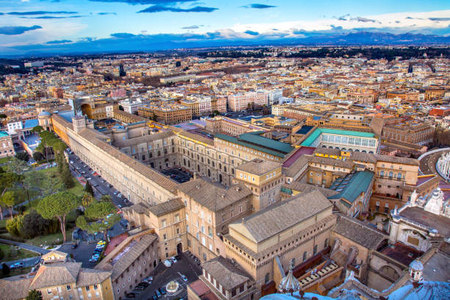
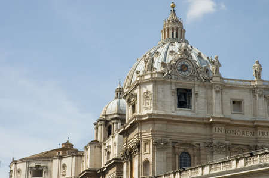
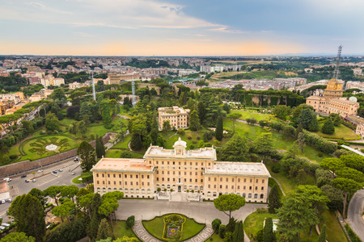
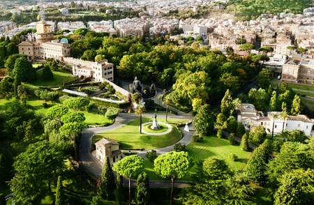
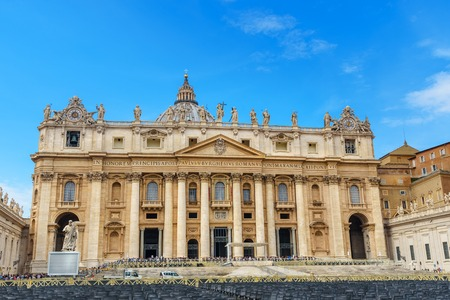
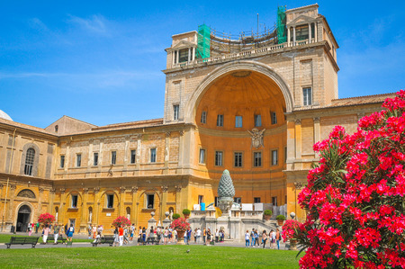
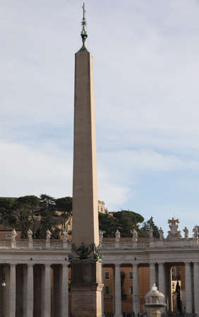

Home
Home
History
Buildings
Popes
Works
fr
/
en
The Vatican City
Buildings
Here are some pictures of some buildings of the city to visit :
The Sistine Chapel

Cupola of Saint Pierre

The Vatican Gardens


Saint Peter's Basilica

The Vatican Museum

Vatican Obelisk
